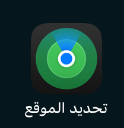
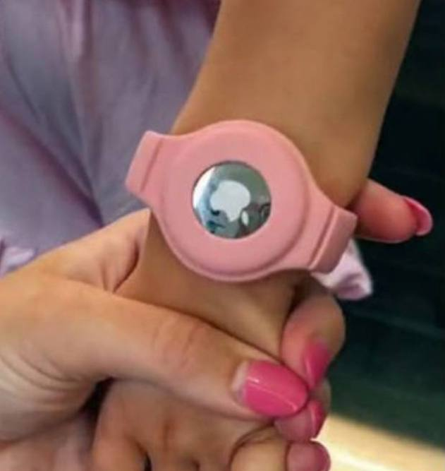
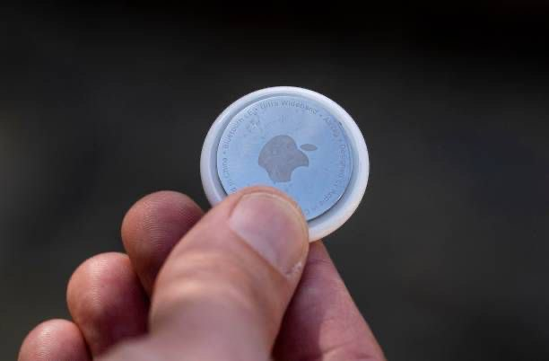

Apple AirTag
يُعتبر AirTag من Apple جهاز تعقب صغير الحجم مصمم لمساعدتك في تتبع أغراضك الشخصية مثل المفاتيح، المحافظ، الحقائب، والمزيد. بفضل تكامله مع تطبيق “تحديد الموقع” (Find My) على أجهزة Apple، يمكنك بسهولة معرفة مكان أغراضك المفقودة.
طريقة تتبع جهاز AirTag من Apple:
- فتح تطبيق العثور على الـ iPhone (Find My).
- الانتقال إلى تبويب الأغراض (Items).
- اختيار AirTag من القائمة لعرض موقعه على الخريطة.
- استخدام خاصية تشغيل الصوت في حال كان قريبًا.
- الضغط على الاتجاهات لتحديد الطريق إلى موقعه.
- تفعيل خيار الإشعار عند العثور عليه في حال كان خارج النطاق.
* يشترط تفعيل البلوتوث وخدمة الموقع واتصال الجهاز بالإنترنت.

معرض الصور


🔝 العودة للأعلى